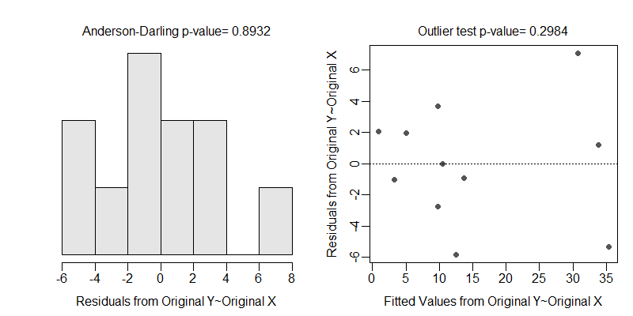
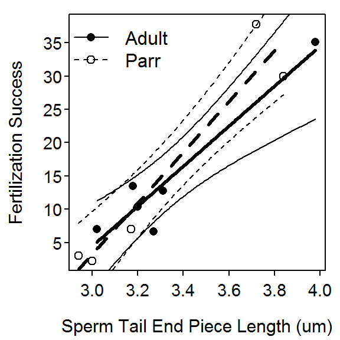
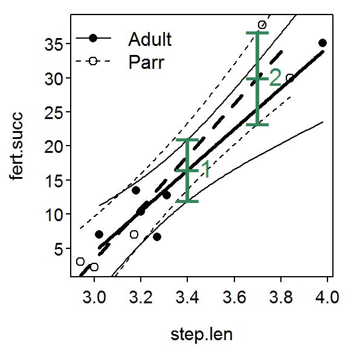
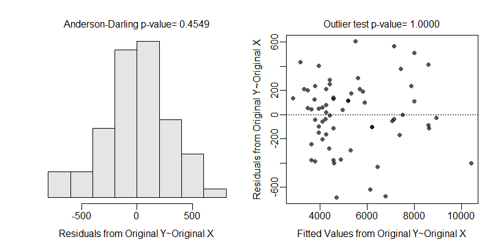
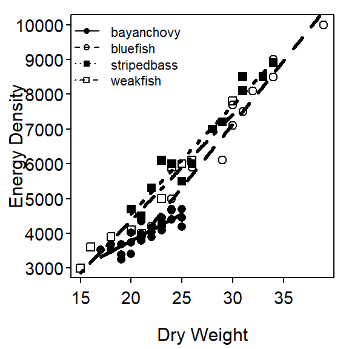
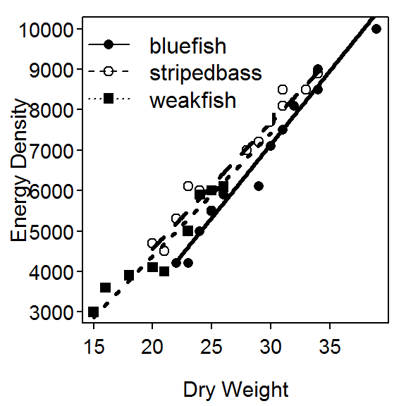

> library(NCStats)
> setwd("C:/aaaWork/Web/GitHub/NCMTH207/modules/IVRegression")Vladic et al. (2002) recorded (in SalmonSperm.csv) the probability of successful egg fertilization (fert.success) and the length of sperm tail end piece (step.len). They asked “Are fertilization success and length of sperm related and does that relationship differ between adult and parr salmon?”
> ss <- read.csv("SalmonSperm.csv")[-c(1,10,11),] # only for class demo purposes
> str(ss)'data.frame': 11 obs. of 3 variables:
$ step.len : num 2.94 3 3.02 3.17 3.18 3.2 3.27 3.31 3.72 3.84 ...
$ fert.succ: num 3 2.2 7 7 13.5 10.4 6.7 12.8 37.8 30 ...
$ mat : Factor w/ 2 levels "Adult","Parr": 2 2 1 2 1 1 1 1 2 2 ...> xlbl <- "Sperm Tail End Piece Length (um)"
> ylbl <- "Fertilization Success"> lm1 <- lm(fert.succ~step.len*mat,data=ss)> transChooser(lm1)
> summary(lm1)Coefficients:
Estimate Std. Error t value Pr(>|t|)
(Intercept) -85.769 20.266 -4.232 0.00388
step.len 30.066 6.066 4.956 0.00164
matParr -25.661 27.273 -0.941 0.37809
step.len:matParr 8.155 8.148 1.001 0.35022
Residual standard error: 4.547 on 7 degrees of freedom
Multiple R-squared: 0.9139, Adjusted R-squared: 0.877
F-statistic: 24.78 on 3 and 7 DF, p-value: 0.0004207 > confint(lm1) 2.5 % 97.5 %
(Intercept) -133.68997 -37.84811
step.len 15.72132 44.41036
matParr -90.15097 38.82930
step.len:matParr -11.11233 27.42328> fitPlot(lm1,interval="confidence",xlab=xlbl,ylab=ylbl,legend="topleft")
> ( nd <- data.frame(step.len=c(3.4,3.7),mat=c("Adult","Parr")) ) step.len mat
1 3.4 Adult
2 3.7 Parr> predictionPlot(lm1,nd,interval="confidence",legend="topleft")
obs step.len mat fit lwr upr
1 1 3.4 Adult 16.45483 11.94067 20.96899
2 2 3.7 Parr 29.98900 23.25902 36.71899> lm1 <- lm(fert.succ~step.len*mat,data=ss)
> anova(lm1) Df Sum Sq Mean Sq F value Pr(>F)
step.len 1 1510.23 1510.23 73.0316 5.966e-05
mat 1 6.11 6.11 0.2953 0.6037
step.len:mat 1 20.72 20.72 1.0017 0.3502
Residuals 7 144.75 20.68 > lm2 <- lm(fert.succ~step.len+mat,data=ss)
> anova(lm2) Df Sum Sq Mean Sq F value Pr(>F)
step.len 1 1510.23 1510.23 73.0157 2.709e-05
mat 1 6.11 6.11 0.2952 0.6017
Residuals 8 165.47 20.68 > lm3 <- lm(fert.succ~step.len,data=ss)
> anova(lm3) Df Sum Sq Mean Sq F value Pr(>F)
step.len 1 1510.23 1510.23 79.219 9.35e-06
Residuals 9 171.58 19.06 Hartman and Brandt (1995) examined the relationship between energy density and percent dry weight for four species of fish – Bay Ancovy (Anchoa mitchilli), Bluefish (Pomatomus saltatrix), Striped Bass (Morone saxatilis), and Weakfish (Cynoscion regalis). They wanted to describe the relationship between these two variables and determine if there were any differences among species.
> FED <- read.csv("FishEnergyDensity.csv")
> str(FED)'data.frame': 64 obs. of 3 variables:
$ species: Factor w/ 4 levels "bayanchovy","bluefish",..: 2 2 2 2 2 2 2 2 2 2 ...
$ dw : int 39 34 34 32 31 30 30 29 26 25 ...
$ ed : int 10000 9000 8500 8100 7500 7100 7700 6100 5900 5500 ...> lm1 <- lm(ed~dw*species,data=FED)> transChooser(lm1)
> anova(lm1)Analysis of Variance Table
Response: ed
Df Sum Sq Mean Sq F value Pr(>F)
dw 1 170693154 170693154 1858.966 < 2.2e-16
species 3 10592036 3530679 38.452 1.258e-13
dw:species 3 4105617 1368539 14.904 3.002e-07
Residuals 56 5142008 91822 > compSlopes(lm1)Multiple Slope Comparisons (using the 'holm' adjustment) comparison diff 95% LCI 95% UCI p.unadj p.adj
1 bluefish-bayanchovy 208.30952 145.62788 270.99117 0.00000 0.00000
2 stripedbass-bayanchovy 157.62055 94.29774 220.94336 0.00001 0.00005
3 weakfish-bayanchovy 149.60379 83.20906 215.99852 0.00003 0.00012
4 stripedbass-bluefish -50.68898 -101.08569 -0.29227 0.04873 0.10290
5 weakfish-bluefish -58.70573 -112.91192 -4.49955 0.03430 0.10290
6 weakfish-stripedbass -8.01676 -62.96310 46.92958 0.77116 0.77116
Slope Information (using the 'holm' adjustment) level slopes 95% LCI 95% UCI p.unadj p.adj
1 bayanchovy 154.1905 102.2341 206.1469 0 0
4 weakfish 303.7943 262.4567 345.1318 0 0
3 stripedbass 311.8110 275.6128 348.0092 0 0
2 bluefish 362.5000 327.4355 397.5645 0 0> fitPlot(lm1,xlab="Dry Weight",ylab="Energy Density",legend="topleft")
> FED1 <- filterD(FED,species!="bayanchovy")
> lm2 <- lm(ed~dw*species,data=FED1)
> anova(lm2) Df Sum Sq Mean Sq F value Pr(>F)
dw 1 104962559 104962559 838.6208 < 2.2e-16
species 2 2583571 1291785 10.3210 0.0003476
dw:species 2 556352 278176 2.2225 0.1247887
Residuals 32 4005150 125161 > compIntercepts(lm2)Warning: Removed an interaction term from 'mdl' (i.e., assumed
parallel lines) to test intercepts.Tukey HSD on means adjusted assuming parallel lines comparison diff 95% LCI 95% UCI p.adj
1 stripedbass-bluefish 631.3980 291.1082 971.6878 0.0001843341
2 weakfish-bluefish 506.4749 144.5318 868.4180 0.0044160914
3 weakfish-stripedbass -124.9231 -480.8922 231.0461 0.6693967026
Mean ed when dw=26.10526 bluefish stripedbass weakfish
5828.663 6460.061 6335.138 > compIntercepts(lm2,common.cov=0)Warning: Removed an interaction term from 'mdl' (i.e., assumed
parallel lines) to test intercepts.Tukey HSD on means adjusted assuming parallel lines comparison diff 95% LCI 95% UCI p.adj
1 stripedbass-bluefish 631.3980 291.1082 971.6878 0.0001843341
2 weakfish-bluefish 506.4749 144.5318 868.4180 0.0044160914
3 weakfish-stripedbass -124.9231 -480.8922 231.0461 0.6693967026
Mean ed when dw=0 bluefish stripedbass weakfish
-2752.451 -2121.053 -2245.976 > fitPlot(lm2,xlab="Dry Weight",ylab="Energy Density",legend="topleft")